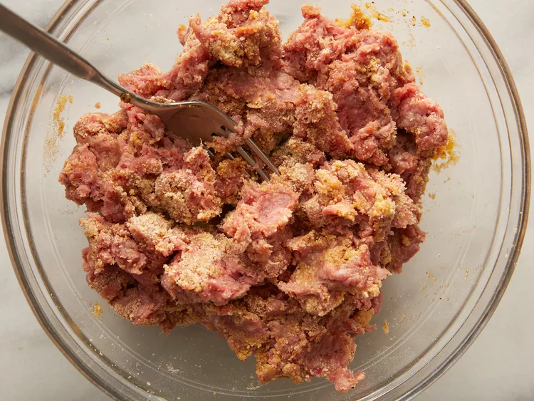
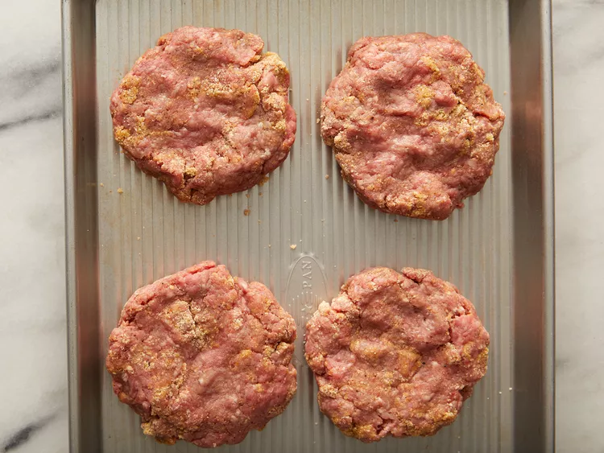

Beef Burger

Description
For a Perfect Basic Burger, you'll need just a few simple ingredients to create a juicy and flavorful patty. Begin by whisking together an egg, salt, and black pepper, then mix in ground beef and . Form the mixture into ¾-inch patties and grill them for 6 to 8 minutes per side, ensuring they reach an internal temperature of at least 160°F. These burgers are deliciously versatile and can be topped with your favorite condiments like mustard, ketchup, and mayo.
This recipe is ideal for a quick and satisfying meal that brings the essence of summer to your table. With just 15 minutes of cooking time, you’ll have perfect grilled burgers ready for any occasion. Plus, they’re easy to store and freeze, making them a convenient choice for busy days. Enjoy them on your favorite buns, dressed up with classic or creative toppings for a customized burger experience!
Ingredients
- 1 large egg
- ½ teaspoon salt
- ½ teaspoon ground black pepper
- 1 pound ground beef
- ½ cup fine dry bread crumbs
Steps
- Preheat an outdoor grill for high heat and lightly oil grate.
- Whisk egg, salt, and pepper together in a medium bowl.

- Add ground beef and bread crumbs; mix with your hands or a fork until well blended.

- Form into four 3/4-inch-thick patties.

- Place patties on the preheated grill. Cover and cook 6 to 8 minutes per side, or to desired doneness. An instant-read thermometer inserted into the center should read at least 160 degrees F (70 degrees C).

- Serve hot and enjoy!